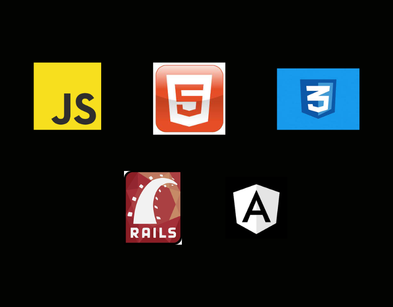

As minhas formações
As minhas formações na área de tecnologia são:
Le Wagon: Web Development
Digital House: UX/UI Design
Digital Innovation One: NTT DATA Tech
Linguagens usadas por mim
Além das linguagens para o desenvolvimento Web, apresentadas acima, tenho conhecimento em prototipação com a ferramenta Figma e Adobe XD.